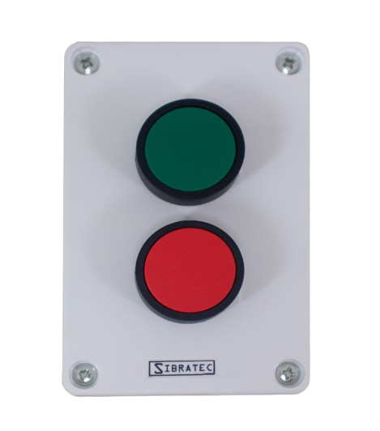
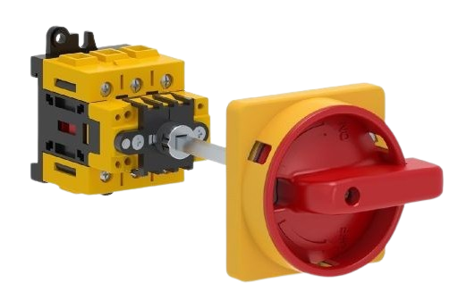

Botoeira e chave de retenção
Botoeira
O que é uma botoeira e para que serve
São botões de comando que permitem que o operador estabeleça ou interrompa a passagem de corrente elétrica em circuitos de comando. Ela servirá como canal de comunicação direto entre o usuário e o circuito e controle do equipamento.
Constituição e estrutura
✦ Cabeçote: é a parte visível que o operador pressiona. Os diâmetros mais comuns no mercado são de 10,15,16, 22 e 30mm
✦ Bloco de contatos: é a parte interna responsável pelo funcionamento da botoeira. Feito de material isolante e tem pastilhas de liga de prata, o que garante uma boa condução e suporte para o arco elétrico.
⋆ NA ou NO: quando em repouso, corrente não irá passar. Quando acionado, fechará o circuito.
⋆ NF ou NC: a corrente passa quando está em repouso. Quando acionado, abrirá o circuito.
⋆ Comutadores: possui uma entrada comum e duas saídas, uma NA e outra NF, para alternar entre caminhos distintos do circuito.
Principais tipos de botoeiras
✦ Botoeira sem retenção: volta para o lugar depois do operador tirar o dedo. Em caso de falta de energia, o circuito desliga e a máquina não ligará sozinha quando a luz voltar.
✦ Botoeira com retenção: ao ser pressionada, se manterá na mesma posição, tendo que ser apertada novamente, ou apertando outro botão, para destrava-lá. Em caso de falta de energia, a máquina ligará sozinha quando a luz voltar.
✦ Pulso duplo: é a união de dois botões sem retenção no mesmo cabeçote. Bom para economizar espaço no painel.
✦ Botão de emergência: possui um cabeçote grande, para facilitar o acionamento rápido. Ele trava e só volta ao normal quando for girado.
✦ Botoeira com chave: possui o mesmo funcionamento do botão de emergência, precisando de uma chave física para destravar o sistema. Isso garante que a máquina seja religada por pessoal autorizado.
Cores
✦ Verde ou preto: dar partida, ligar.
✦ Vermelho: parar, desligar, emergência.
✦ Amarelo: cancelar operação, inverter sentido, interromper ciclos perigosos.

Chave de retenção
O que são chaves de retenção?
Também chamadas de chaves seletoras rotativas, são dispositivos de acionamento manual por rotação que servem para desviar, estabelecer ou interromper a passagem de corrente elétrica em circuitos de comando. Elas funcionam como interface para que o operador selecione diferentes funções de uma máquina ou sistema elétrico, como alternar entre o modo manual e automático.
Constituição e estrutura
✦ Cabeçote: é a parte frontal e giratória visível no painel. Pode variar em formatos como manopla curta, a padrão, ou manopla longa, que facilita o manuseio com luvas. Os diâmetros mais comuns no mercado são de 22 e 30mm
✦ Bloco de contatos: é a parte interna responsável pelas conexões elétricas, ficando atrás da manopla. Conforme o operador gira a manopla em diferentes ângulos, os blocos de contato serão empurrados.
⋆ NA ou NO: fecha e permite a passagem da corrente apenas quando a manopla é girada para a posição correspondente.
⋆ NF ou NC: abre e corta a corrente quando a manopla assume a posição daquele contato.
Principais tipos de chaves seletoras rotativas:
✦ Chave de duas posições fixas(90° ou 45°): quando girada, ela para na posição e permanece lá até que o operador a mova manualmente de volta.
✦ Chave de três posições fixas: possui uma posição central de descanso e duas posições laterais de acionamento.
⋆ Exemplo: posição 1 - manual, centro - desligado, posição 2 - automático.
✦ Chave Seletora com Retorno por Mola: o operador gira a manopla para acionar o circuito, mas assim que ele a solta, uma mola interna força o botão a voltar sozinho para a posição inicial..
✦ Chave Seletora com Chave Física: o atuador de manopla é substituído por um miolo de chave. O circuito só pode ser alterado por profissionais que possuam a chave física, impedindo que pessoas não autorizadas mudem o modo de operação da máquina.
